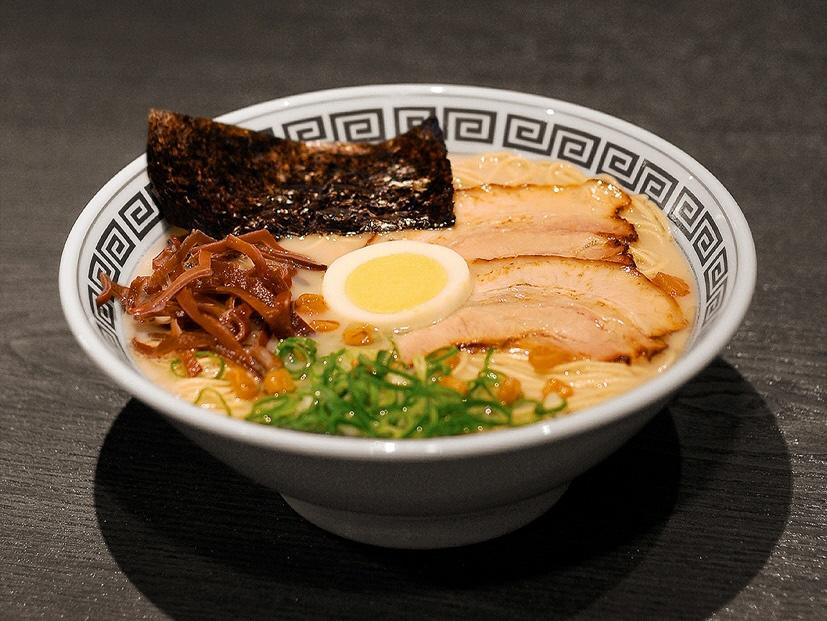

Kurume Ramen
「久留米ラーメン — The origin of modern tonkotsu, intense and full of history.」
Kurume Ramen is the root of modern tonkotsu ramen. Its thick broth is prepared with pork bones simmered for more than 12 hours, resulting in an intense and cloudy flavor.
Ingredients
- Pork bone broth
- Thin noodles
- Chashu pork, fried garlic and scallions
- Light soy sauce
Flavor
Deep, salty and with smoky nuances.
Scent
Rich, intense and meaty.
Texture
Thick and silky, with a heavy, comforting body.